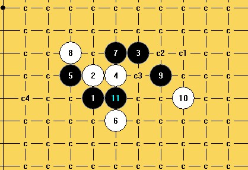
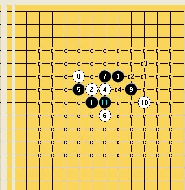
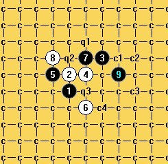
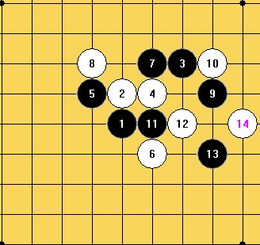
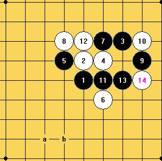
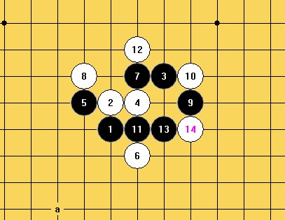
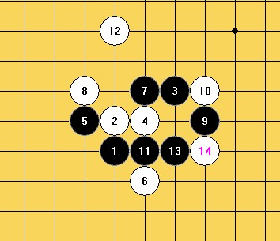
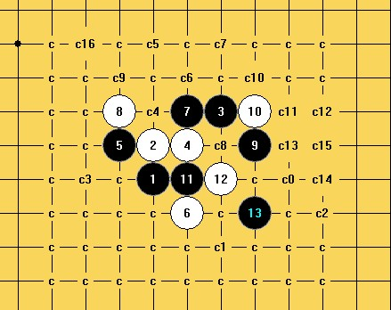
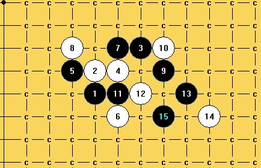

疏星一打弱10（C8）的地毯
首页
≮炫飞☆棋社≯
#1 疏星一打弱10（C8）的地毯 作者：山城刀客 发表时间：2012-3-7 19:49:56
如上图，10必败，已经地毯！图谱如下：

请大家拆拆看，过几天发谱！
［ 冰雪笑醉 于 2012-3-7 20:18:41 时花20金币送鲜花一朵］
［ 冰雪笑醉 于 2012-3-7 20:18:49 时花20金币送鲜花一朵］
［ 空恨社小仙 于 2012-3-8 0:54:56 时花20金币送鲜花一朵］
［ 于 2012-3-8 12:41:50 时花20金币送鲜花一朵］
［ 于 2012-3-8 12:41:58 时花20金币送鲜花一朵］
［ 炫飞柳扶风 于 2012-3-8 13:24:38 时花20金币送鲜花一朵］
［ 虎哥 于 2012-3-8 22:28:09 时花20金币送鲜花一朵］
#2 Re:山城刀客【==疏星一打弱10（C8）的地毯==】 作者：冰雪笑醉 发表时间：2012-3-7 20:18:17

［此帖子已被 冰雪笑醉 在 2012-3-7 20:18:35 编辑过］
［ 山城刀客 于 2012-3-7 20:27:50 时花20金币送鲜花一朵］
#3 Re:山城刀客【==疏星一打弱10（C8）的地毯==】 作者：空恨社小仙 发表时间：2012-3-8 0:54:11
大家拆拆看，有问题发图。。。 ［ 山城刀客 于 2012-3-8 11:59:42 时花20金币送鲜花一朵］
#4 Re:疏星一打弱10（C8）的地毯 作者：山城刀客 发表时间：2012-3-8 12:02:31
请问小仙：C1已经地毯了吗？另外，q1、q2、q3是仅剩的三个10吗？
#5 Re:山城刀客【==Re:疏星一打弱10（C8）的地毯==】 作者：空恨社小仙 发表时间：2012-3-10 5:40:22
是的
#6 Re:疏星一打弱10（C8）的地毯 作者：侯军学棋 发表时间：2012-3-10 21:02:36
大师好 C1点可以提供学习啵？QQ好644952321谢谢
#7 Re:疏星一打弱10（C8）的地毯 作者：山城刀客 发表时间：2012-3-11 1:00:17

图一

图二

图三

图四
关于C1，有上面四路变化拆不出，难度太大，困惑很久了，望大师们提供思路，感谢！
#8 Re:山城刀客【==Re:疏星一打弱10（C8）的地毯==】 作者：sonix 发表时间：2012-3-12 8:23:22
引用：
原文由 山城刀客 发表于 2012-3-11 1:00:17 :
图一
图二
图三
图四
关于C1，有上面四路变化拆不出，难度太大，困惑很久了，望大师们提供思路，感谢！
这2个没啥问题吧，其他的没思路
#9 Re:疏星一打弱10（C8）的地毯 作者：自来水 发表时间：2012-3-12 12:35:40
 没拆过，观摩
没拆过，观摩
#10 Re:山城刀客【==Re:疏星一打弱10（C8）的地毯==】 作者：空恨社小仙 发表时间：2012-3-12 18:12:39
以前也只是偶尔看了一下我师父空恨的谱上标记这个10为c1，但我师父做的是简谱，并不是地毯谱，后面很多黑点白点，盘面标记也比较复杂。。看到你发的帖之后我仔细拆了一下，确实是可以地毯的。。［此帖子已被 空恨社小仙 在 2012-3-12 18:15:38 编辑过］
#11 Re:空恨社小仙【==Re:山城刀客【==Re:疏星一打弱10（C8）的地毯==】==】 作者：空恨社小仙 发表时间：2012-3-12 18:20:23
［ 山城刀客 于 2012-3-13 4:23:15 时花20金币送鲜花一朵］
［ 山城刀客 于 2012-3-13 4:24:03 时花20金币送鲜花一朵］
#12 Re:空恨社小仙【==Re:空恨社小仙【==Re:山城刀客【==Re:疏星一打弱10（C8）的地毯==】==】==】 作者：空恨社小仙 发表时间：2012-3-12 18:21:49
lz发的四路变化我是这样杀的，当然可能还别的杀法。。。
#13 Re:疏星一打弱10（C8）的地毯 作者：山城刀客 发表时间：2012-3-13 2:42:12

哎 ！！！拆了那么久，原来13都错了，白忙活好多天！！！
#14 Re:疏星一打弱10（C8）的地毯 作者：山城刀客 发表时间：2012-3-13 4:14:11

地毯这个真不容易呀！
#15 Re:山城刀客【==Re:疏星一打弱10（C8）的地毯==】 作者：空恨社小仙 发表时间：2012-3-14 0:03:39

#16 Re:山城刀客【==Re:疏星一打弱10（C8）的地毯==】 作者：空恨社小仙 发表时间：2012-3-14 0:07:54
引用：
原文由 山城刀客 发表于 2012-3-13 2:42:12 :
哎 ！！！拆了那么久，原来13都错了，白忙活好多天！！！
难道楼上这个13也能地毯吗？
#17 Re:疏星一打弱10（C8）的地毯 作者：潇洒 发表时间：2012-3-14 0:36:32
c0 。。。。。。。。。。
#18 Re:疏星一打弱10（C8）的地毯 作者：虎哥 发表时间：2012-3-14 22:23:03
楼主做谱真够细致的
#19 Re:山城刀客【==Re:疏星一打弱10（C8）的地毯==】 作者：炫飞缘灭 发表时间：2012-3-22 7:53:25
Q1Q3我没地毯 其余都杀了 你会Q1Q3么